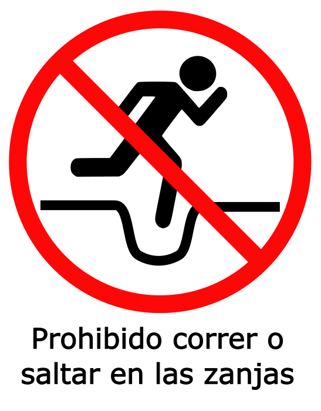
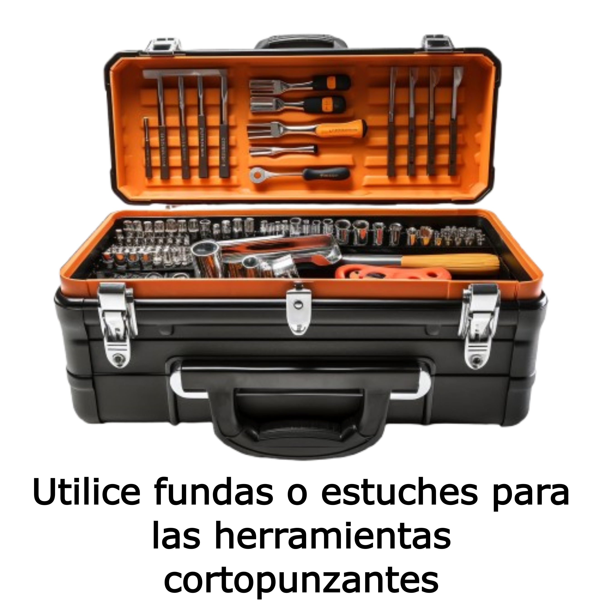
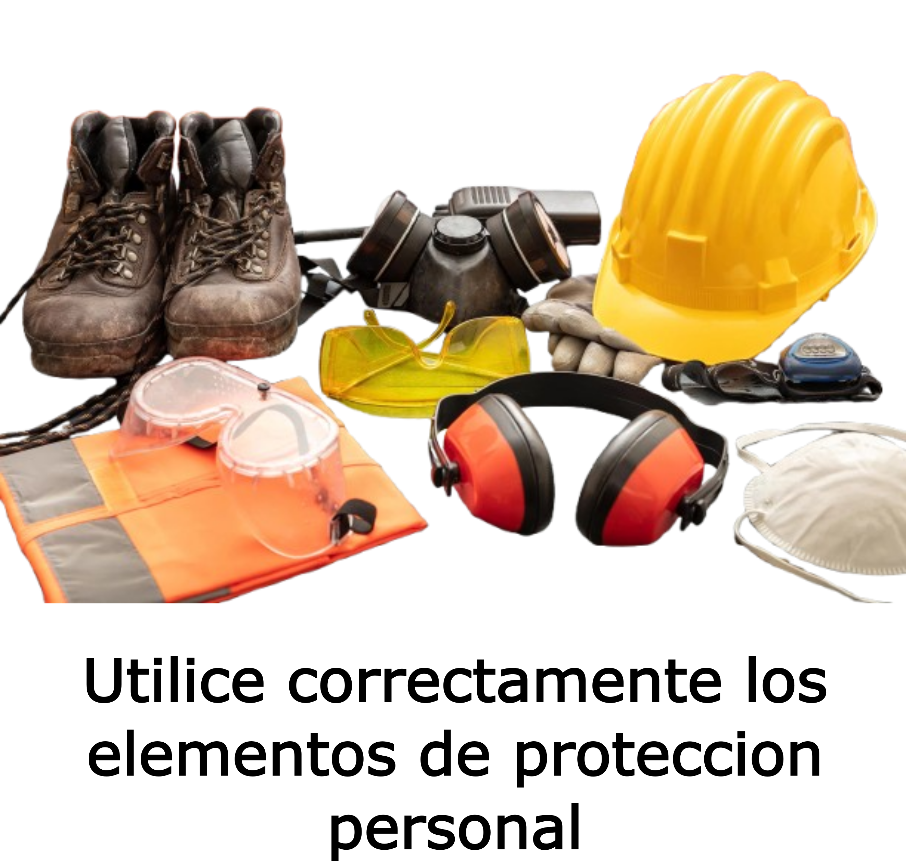
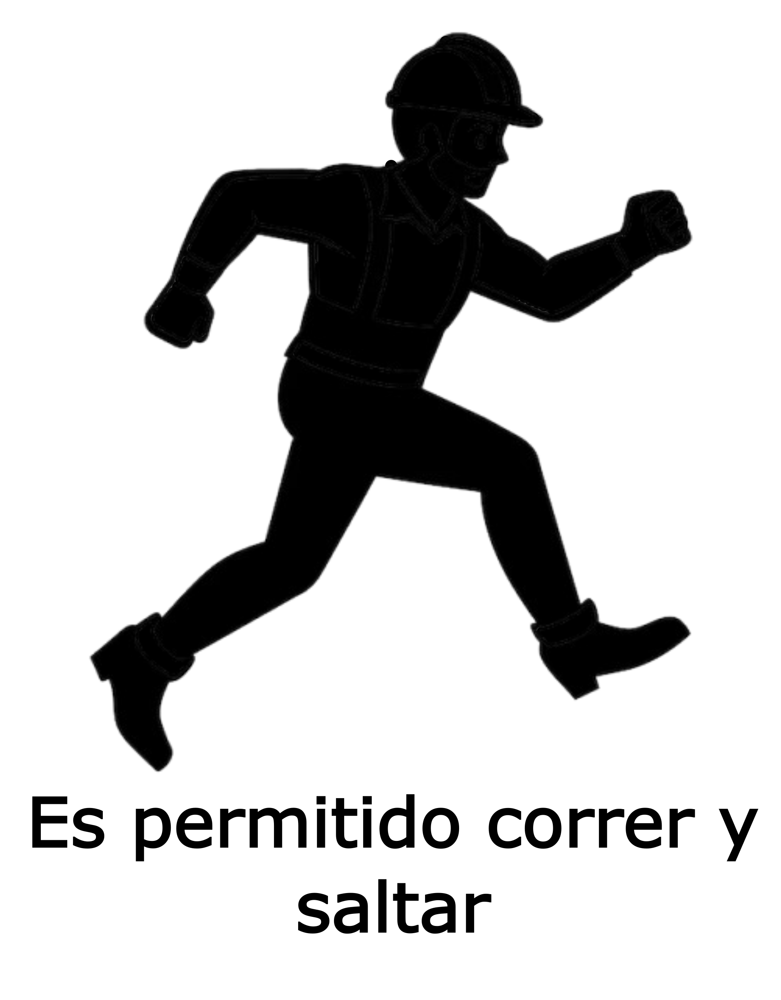
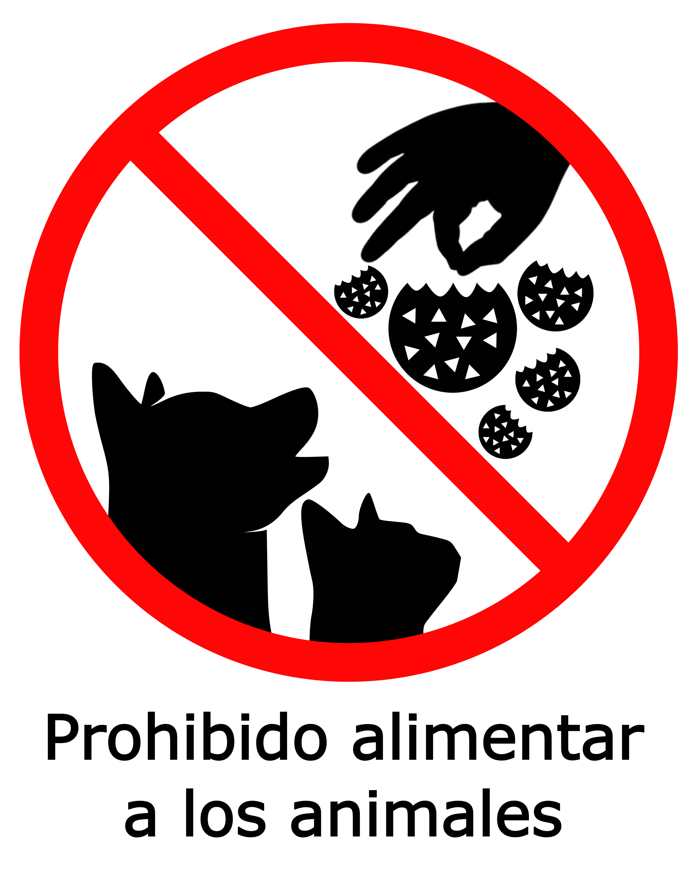
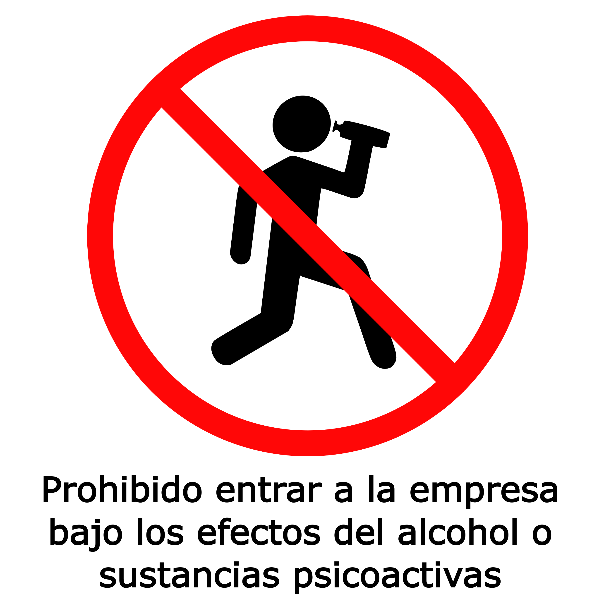
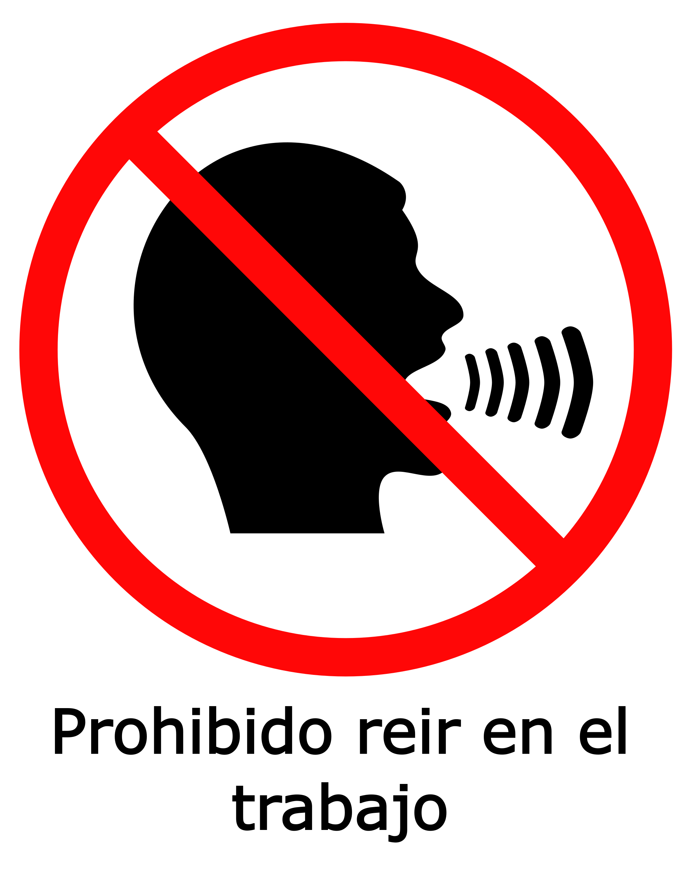
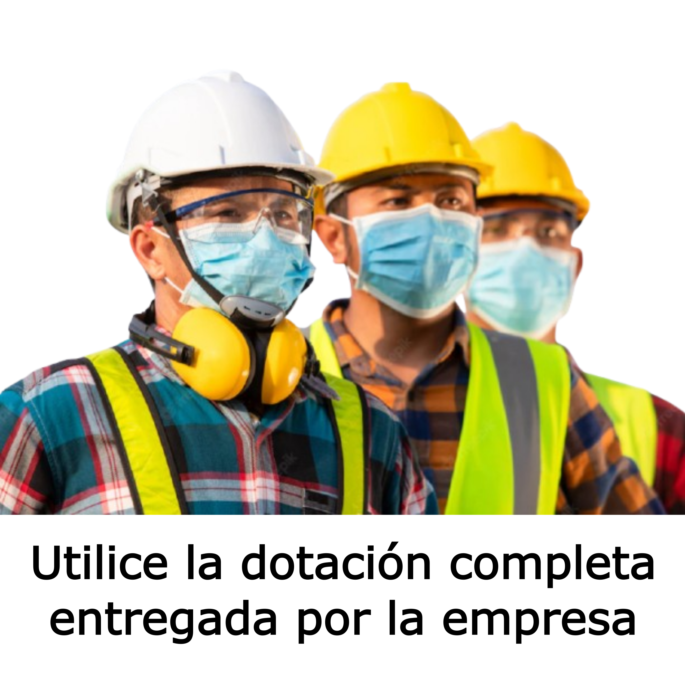
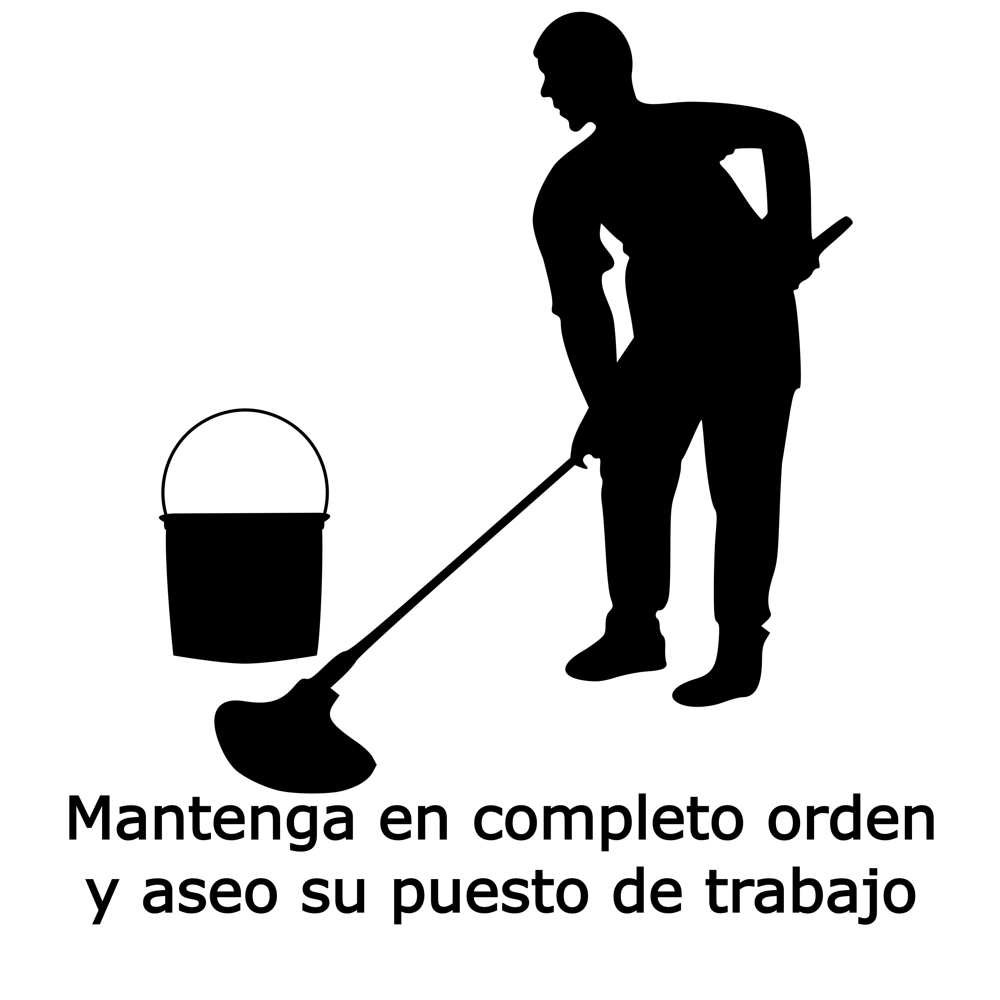

Evaluación Inducción SST
Nombre completo
Identificación
Cargo
Seleccione su cargo
Mantenimiento y jardinería
Facturador
Operador máquina de empaque
Analista de calidad
Auxiliar de empaque
Coordinador de trilla
Operador de montacargas
Asistente de compras materia prima
Supernumerario SST
Mecánico
Coordinador de secamiento
Auxiliar cafetería
Vigilante
Director comercial insumos llanos
Auxiliar de trilla
Supervisor de vigilancia
Asistente de contabilidad
Auxiliar de secamiento
Jefe administrativo aguazul
Recepcionista
Jefe de costos
Vendedor
Comprador materia prima tolima norte
Mercaderista
Coordinador control de calidad
Auxiliar SST
Supervisor de maquila
Auxiliar de compras materia prima
Mensajero
Asistente administrativo
Representante técnico comercial senior
Coordinador de ventas
Asistente administrativo insumos y compras materia prima Villavicencio
Director comercial zona Antioquia
Electricista
Gerente general
Almacenista de insumos agrícolas
Auxiliar de despachos
Auxiliar de bodega y despachos
Analista compras de insumos
Auxiliar mecánico
Supervisor de campo
Electrónico
Jefe de mantenimiento
Analista de procesos SAP
Gerente operativo planta la maría
Aprendiz SENA
Representante técnico comercial
Gerente administrativo y financiero
Administrador
Gerente nacional de ventas
Conductor
Jefe de auditoria
Coordinador de producción
Coordinador de despachos
Conductor tractomula
Jefe de seguridad y salud en el trabajo
Jefe de planta u obra Aguazul
Almacenista
Analista SST
Coordinador comercial
Director agencia insumos Villavicencio
Auxiliar de tesorería
Auxiliar eléctrico
Auxiliar de cartera
Auxiliar de recursos humanos
Director agencia insumos Yopal
Electromecánico
Analista de sistemas
Supernumerario de producción
Operador de bascula
Auxiliar de facturación
Auxiliar de auditoria
Gerente de mercadeo nacional
Gerente operativo planta Aguazul
Asistente administrativo insumos tolima
Comprador materia prima
Pregunta 1
¿Describa con sus propias palabras cuál es el objetivo que tiene el área de Seguridad y Salud en el Trabajo en Agroindustrial Molino Sonora AP S.A.S?
Garantizar el cumplimiento exclusivo de las normas laborales del sector industrial.
Promover un entorno laboral seguro y saludable para prevenir accidentes y enfermedades.
Aumentar la producción de bienes y servicios en la empresa.
Pregunta 2
¿Qué es un acto inseguro?
Situación intrínseca en nuestro ambiente de trabajo que aumenta la posibilidad de algo.
Violación u omisión de una norma o procedimiento por parte del trabajador que aumenta las posibilidades que ocurra un accidente.
Es el suceso en el que no hay como resultado una lesión. También se puede denominar como casi-accidente (situación en la que casi ocurre).
Es la contraída como resultado de la exposición a factores de riesgo inherentes a la actividad laboral o del hogar.
Pregunta 3
Seleccione un peligro, su consecuencia y una acción para minimizarlo.
Peligro
Seleccione un peligro
Consecuencia
Seleccione una consecuencia
Acción
Seleccione una acción
Peligro
Seleccione un peligro
Consecuencia
Seleccione una consecuencia
Acción
Seleccione una acción
Peligro
Seleccione un peligro
Consecuencia
Seleccione una consecuencia
Acción
Seleccione una acción
Pregunta 4
¿Qué es un accidente de trabajo?
Es acciedente de trabajo todo suceso repentino que sobrevenga por causa o con ocasion del trabajo, y que produzca en el trabajador una lesión organica, una pertubación funcional o psiquiátrica, una invalidez o la muerte.
Contraída como resultado de la exposición a factores de riesgo diferentes a la actividad laboral o en el lugar de vivienda.
Todo suceso acaecido en el curso del trabajo o en relación con este, que tuvo el potencial de ser un accidente, en el que hubo personas involucradas sin que sufrieran lesiones o se presentaran daños a la propiedad y/o pérdida en los procesos.
Pregunta 5
Ordene de 1 a 6 los pasos para el reporte correcto de Accidente de trabajo.
1
2
3
4
5
6
Colaborador se dirige a la oficina de SST
1
2
3
4
5
6
El colaborador se desplaza hasta el centro médico
1
2
3
4
5
6
Colaborador reporta a su jefe inmediato
1
2
3
4
5
6
Se genera el reporte del accidente de trabajo (FURAT)
1
2
3
4
5
6
Colaborador recibe un primer auxilio para revisar herida
1
2
3
4
5
6
Colaborador realiza la versión libre de lo ocurrido
Avanzar
Pregunta 6
¿Para que sirve el COPASST en la empresa?
Organismo para interponer las quejas de acoso laboral que se presenten en los ambientes de trabajo.
Organismo que sirve para medir rendimientos en las actividades diarias en cada una de las áreas.
Organismo integrador y puente para divulgar las actividades de seguridad y salud en el trabajo al interior de la empresa.
Pregunta 7
Indique 3 ejemplos de condiciones inseguras que se pueden presentar en un entorno laboral
Seleccione una condición insegura
Pisos resbalosos o con derrames
Falta de sillas ergonómicas
Uso obligatorio de uniformes
Seleccione una condición insegura
Disponibilidad de botiquines de primeros auxilios
Herramientas mal almacenadas
Espacios amplios para circular
Seleccione una condición insegura
Señalización clara y visible
Superficies de trabajo organizadas
Iluminación insuficiente en áreas de trabajo
Pregunta 8
Seleccione tres Roles y Responsabilidades que usted como trabajador debe cumplir con el área de SST
Seleccione un rol o responsabilidad
Informar sobre riesgos detectados en el lugar de trabajo
Crear el manual de procedimientos de la empresa
Supervisar a otros empleados en sus tareas diarias
Seleccione un rol o responsabilidad
Realizar las inspecciones técnicas de las máquinas
Participar en las capacitaciones de seguridad
Diseñar las políticas de SST de la empresa
Seleccione un rol o responsabilidad
Aprobar presupuestos para el área de SST
Dirigir reuniones del comité de SST
Usar adecuadamente los equipos de protección personal (EPP)
Pregunta 9
Seleccione las normas de seguridad de obligatorio cumplimiento en Agroindustrial Molino Sonora.









Pregunta 10
¿En Agroindustrial Molino Sonora AP S.A.S. está prohibido realizar tareas no asignadas a su cargo, porque esto puede exponerlo a riesgos que no han sido evaluados o controlados y que pueden generar daño a su integridad?
Sí puedo realizarlo siempre y cuando nadie se entere.
Sí está prohibido porque me expongo a riesgos no controlados que pueden afectar mi salud o integridad.
No está prohibido, no hay riesgo al hacerlo.
Regresar
Finalizar